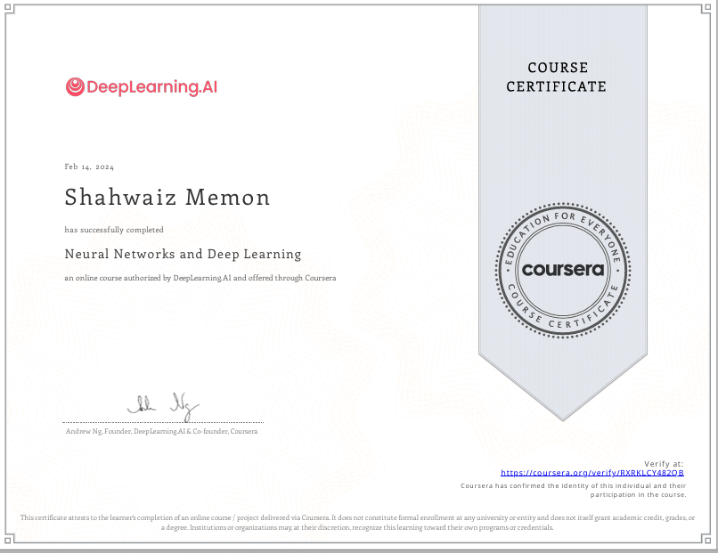
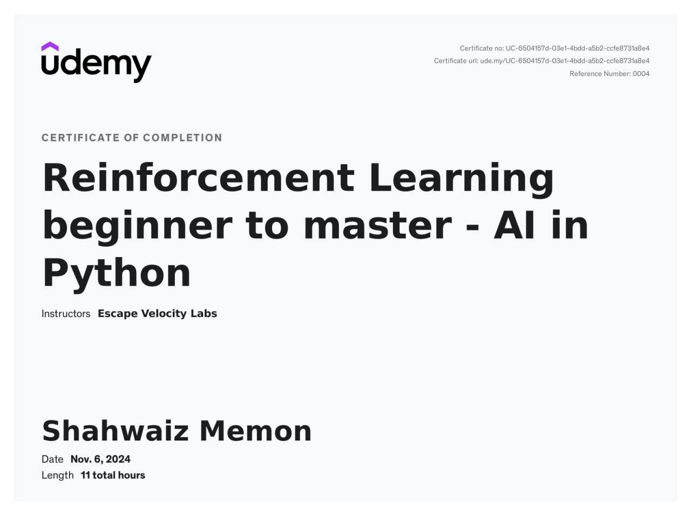
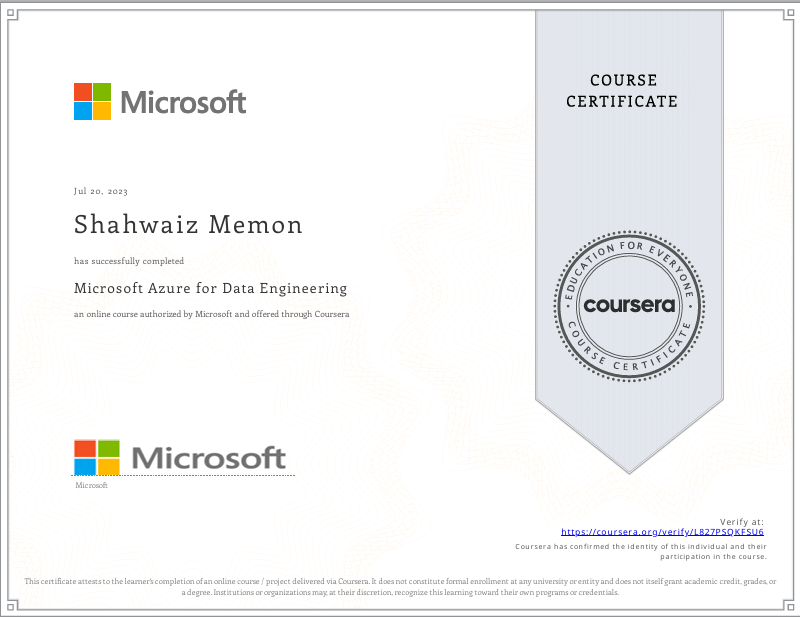
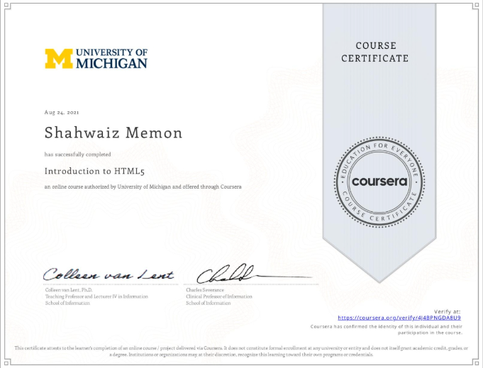

Efficient intelligence
How can models become lighter and faster without sacrificing the capabilities that make them useful?
AI RESEARCHER / SECURE SYSTEMS BUILDER LVL 05
I explore how intelligent systems can become more efficient, reliable, and secure. From lightweight models and agentic workflows to AI-driven cyber defence, I turn research questions into measurable experiments and practical systems.
ABOUT / SYSTEMS PERSPECTIVE
I am an MEng student in Electrical and Computer Engineering at the University of Victoria and a published machine learning researcher. My work sits at the intersection of AI research, software systems, and cybersecurity.
Professionally, I have developed production-oriented agentic AI applications, automated workflows, evaluation pipelines, APIs, and observable cloud systems. Academically, I investigate lightweight machine learning for resource-constrained deployment and AI-based detection of sensor-spoofing attacks in connected devices.
I am most interested in systems where performance alone is not enough. The model must also be measurable, reliable, explainable, and resilient outside a controlled environment.
TWO PATHWAYS / ONE PERSPECTIVE
Model efficiency, multimodal learning, agentic systems, evaluation, benchmarking, and production deployment.
EXPLORE AI WORK 02ML-based attack detection, IoT security, network defence, digital forensics, and security-aware AI deployment.
EXPLORE SECURITY WORKRESEARCH FOCUS
How can models become lighter and faster without sacrificing the capabilities that make them useful?
How can tool-using AI systems be evaluated, observed, and constrained when failures emerge across multi-step workflows?
How can ML detect attacks against connected devices without unacceptable latency or false positives?
01 / SELECTED MISSIONS
Three directions I keep returning to: making models smaller, making agents more dependable, and making intelligent systems useful at the edge.
M.ENG PROJECT / UNIVERSITY OF VICTORIA
Lightweight ML approaches for battery state-of-health and remaining-useful-life prediction, benchmarked for accuracy, latency, and deployment feasibility.
DIRECTED STUDIES / UVIC
Detecting and predicting sensor-spoofing attacks on a smart thermostat with resource-aware classifiers.
RESEARCH / DATA-INSIGHT LAB
Built EcoLLM-Mini through knowledge distillation and profiling, then published the results at IEEE AIBThings 2024.
02 / PLAYER HISTORY
UNIVERSITY OF VICTORIA // VICTORIA, CANADA
Researching efficient ML for battery health and resilient IoT systems. Also a Teaching Assistant for pattern recognition, blockchain, and software engineering.
SCALA TEAMS LLC // ISLAMABAD, PAKISTAN
Production LLM and multi-agent systems with RAG, tools, structured data, evaluation, and observability. Parallelized Python and SQL benchmarks to reduce evaluation time by 53%.
DATA-INSIGHT LAB // ISLAMABAD, PAKISTAN
Published IEEE research on knowledge distillation and efficient image-to-description models.
PUBLISHED RESEARCH / 2024
Developed a resource-efficient multimodal model for image-to-description generation, reducing computational requirements by 88% and improving inference speed by 92%.
03 / LOADOUT
Curious enough to explore, rigorous enough to measure. My default toolkit spans research, production systems, and the space between them.
04 / CREDENTIALS
Verified courses and certifications across cloud, data engineering, deep learning, and reinforcement learning.

Neural Networks and Deep LearningDeepLearning.AI / Coursera
RLHF: AI in PythonUdemy Microsoft Azure FundamentalsMicrosoft AWS Cloud FoundationsAWS Academy / Credly
Azure Data EngineeringMicrosoft / Coursera
Introduction to HTML5University of Michigan / Coursera05 / TRANSMIT
END OF TRANSMISSION
I am interested in research and engineering opportunities across machine learning, agentic AI, ML systems, cybersecurity, and intelligent connected devices.
Start a conversation